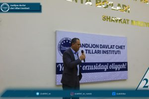
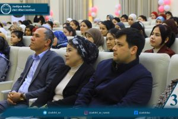
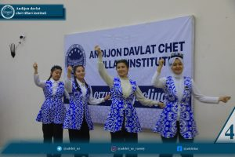
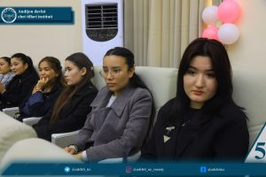
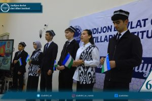
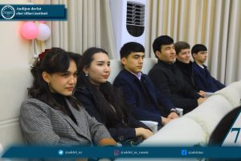
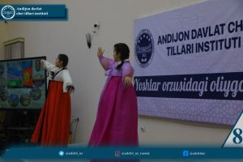
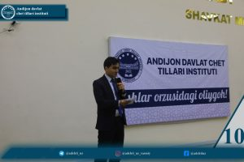

Xalqaro akademik mobillik dasturi doirasida Qirg'iziston Respublikasining O'sh davlat universitetida bo'lib qaytgan Andijon davlat chet tillari instituti delegatsiyasi o'z tengdoshlari uchun unutilmas ma'rifiy-badiiy kecha tashkil etdi.
Bugun oliygohimizda an'anaviy «Payshanba — Yoshlar kuni» doirasida O'shDUdan qaytgan iqtidorli talabalarimiz va Rus tili nazariyasi va tarjimashunosligi kafedrasi o'qituvchisi M.Uraimova ishtirokida uchrashuv bo'lib o'tdi. Uni institutning O'quv-uslubiy boshqarmasi boshlig'i K.Karimov ochib berdi.
Tajriba va mahorat: Delegatsiya a'zolari qardosh universitetda o'tkazilgan «Do'stlik diktanti», innovatsion Start-up loyihalar taqdimoti hamda dars jarayonlaridan olgan taassurotlari bilan o'rtoqlashdilar.
Madaniy muloqot: Tadbir davomida O'shda namoyish etilgan va mezbonlar olqishiga sazovor bo'lgan badiiy chiqishlar — Vatanimizni madh etuvchi she'rlar, kuy-qo'shiqlar va raqslar institutimiz talabalari e'tiboriga havola etildi.
Akademik intilish: Talaba-yoshlar xalqaro ta'lim muhitidagi farqlar, yangi metodika va bilim olishdagi zamonaviy yondashuvlar haqida qiziqarli prezentatsiyalar namoyish etdilar.
Andijon davlat chet tillari instituti iqtidorli yoshlarni har tomonlama qo'llab-quvvatlashda va xalqaro maydondagi nufuzini yanada mustahkamlashda davom etadi!Uchrashuvda so'z olganlar ta'kidlaganidek, bunday safarlar nafaqat bilim almashish, balki talabalarning dunyoqarashini kengaytirish, ularda vatanparvarlik va xalqaro do'stlik tuyg'ularini mustahkamlashga xizmat qiladi.
Andijon davlat chet tillari instituti axborot xizmati







